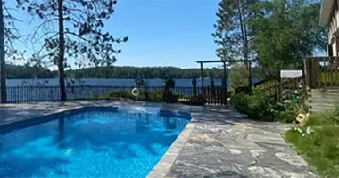

Couples Resort
About Couples Resort
Information about Couples Resort
Ontario's Couples Resort is on the shores of Algonquin Park's Galeairy Lake, which mostly is in Algonquin Park. and the Madawaska River. The village of Whitney, Ontario is a short 15-minute walk away. Algonquin Park being our back yard we are surrounded with breathtaking wilderness, pure fresh air, secluded forests, pristine waters, an abundance of sunny days and a blanket of stars at night.
A 5-STAR Luxury Resort for 46 couples. Endless Nature and Sports Activities, together with Pampering Spa Treatments and followed by Decadent Gourmet dining by our International Chefs.
Those of you who need to escape from the bustle will find us calming and rejuvenating. There are many ways to do nothing if that is your wish. On the other hand, unlimited activities will keep the adventurer active all year round. Ontario's Natural Algonquin Park is ideal for the sport enthusiast or avid adventurer who will be delighted with the extraordinary activities available.
"Thank you for your interest in our Couples Resort. Here you will find the time to spend quality time together, and this is why we exist, to be here, so that you can spend lots of time together. We, the Sorensen Family, started in 1967 to take care of guests, in 1989 we moved to couples only (no kids and no meetings/conferences) as we knew that many couples needed special time together. In 2006, Canada Select which was rating 4000 accommodation properties in Canada, decided we should join them because we were easily in the top 1%, a 5 Star, and we are glad we made it for you to enjoy as you deserve it. Now, many times of the year, we offer rates super discounted as we wish to be accessible to as many couples as possible, as all couples should benefit from quiet time together. We have learned over the decades from our guests that those guests that have a love for gratitude for each other and for their surroundings are the happiest people, daily I ask how grateful am I, and I hope you are filled with many things that you are grateful for. If you know other couples who need time away please pass on the word."
2018, IceHiking invented by John Sorensen, 50 years after Father, Fritz Sorensen opened up Cross Country Skiing in Algonquin Park, now get out and go and enjoy Nature!
Your Hosts, The Sorensen Family & Team
The Couples Resort, Ontario - Canada
Couples Resort
Facilities
► Lakeside Patio & Pool
► Gift Shop & Rec Room
► Gym & Sports Centre
▼ Artist Gallery & Museum
Artist Gallery
Gertrud Sorensen - Artist
Gertrud Sorensen is an Austrian-born Canadian. After a successful business career with Danish husband Fritz, at The Bear Trail Couples Resort, she became our resident artist. Gertrud presently operates an extensive art studio with over 30 paintings in her gallery. https://www.gertrudsorensen.com The four Algonquin seasons are portrayed with varying moods in vibrant colours on her canvases. Having learned from Poul Thrane, David Armstrong, Gladys Ewing, Mary Lampman and Ron Leonard, it is easy to appreciate how they and the nature of Algonquin Park have influenced Gertrud's art. Visit Gertrud's on-site studio while you are here and enjoy her artwork. Wander in and watch a canvas come to life. Take home a special gift to remember a romantic honeymoon or a joyous occasion as many of our guests from around the world have done. Contact Gertrud Sorensen
Email: gertrudsorensen@couplesresort.ca
Museum
Take a historical photo journey in one of the first cabins built on the property when it was known as the Bear Trail Inn to the present day Couples Resort.
The resort has enjoyed a long and memorable history since 1967, when the Sorensen family purchased the property.
The Couples Resort will be an experience that you look back on with many memories. It is these memories that keep guests returning.